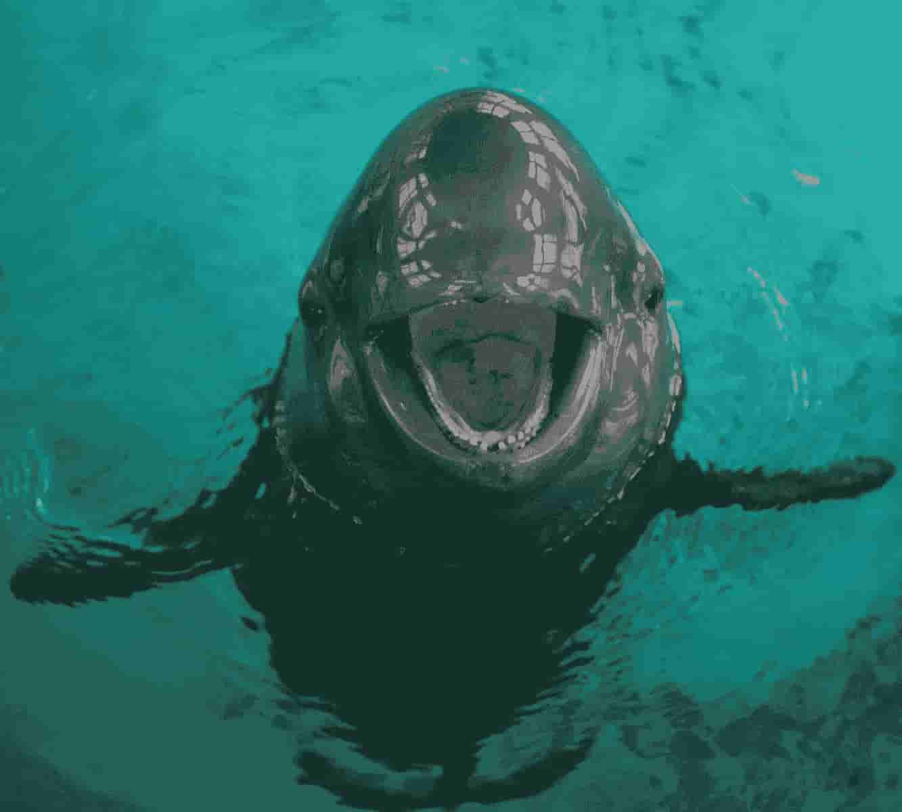

Responsive design
Grid View
Grid View är när du delar skärmen i lådor så att du kan ge en procent av skärmen till något, till exempel text eller en bild.
HELP ME AHHHHAHHHHHHHHHHHHH
Media Queries
Media Queries är när du gett en annorlunda storlek på hemsidan än vad som är vanligt så kan du ändra storleken på vissa element inom hemsidan, punkterna när hemsidan ändras heter “Breakpoints”.